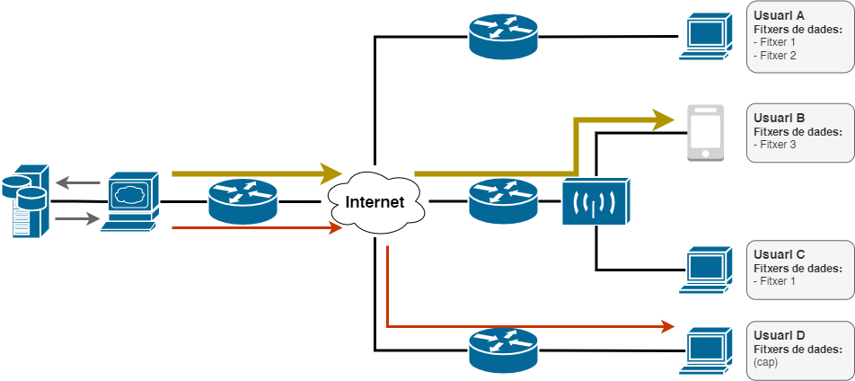
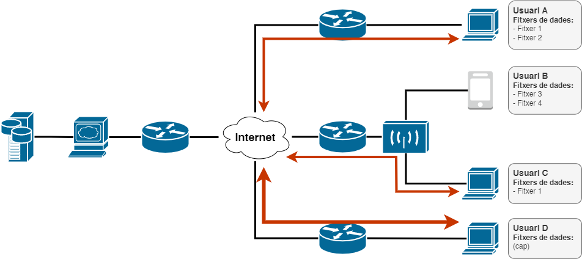
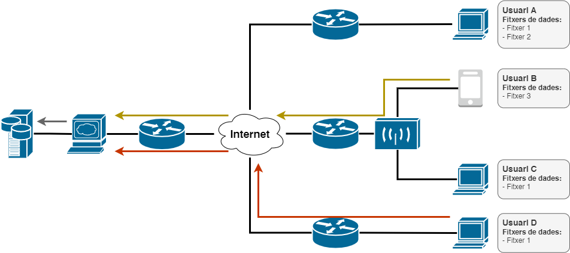

It all starts with you... When you press the start button, you are inadvertently collaborating with various scientific investigations in the medical, physical, space, and many other fields.
This project was born in 2023 as a result of a computer science final degree project. It consists in a system that allows scientific comunity to use the domestic compute power to perform simulations and support all kinds of investigations that require intensive computation.
- You press the start button
- Your computer downloads a task created by scientists
- It calculates the answer to the proposed problem
- It sends the result back to the scientists
- Congratulations! You have now collaborated with science
And in case you still have doubts about how the system works... here's a more detailed explanation with an example:
In this first stage we have 4 users from 3 different networks, some of them with previous files from other tasks they have already completed. Users B and D send the request for a new task to the central server, and when it receives them, it performs the corresponding queries in the database and returns the results.
Once the central server has received the necessary information from the database, it sends user B a new task, and since it knows that no one has the file 4 that is needed to perform the calculations, it also sends it to him. In the same way, it sends user D a new task, but in this case, as it requires file 1 to perform the calculations and it is available to other users, it also sends him the instructions to start a new P2P connection with these and be able to get the file you need.
User D establishes with some of the users who have the file he needs and asks them for it. Then they send you, either a part or the whole file.
Once the users finish their respective tasks, they send the results back to the central server, which stores them in the database.